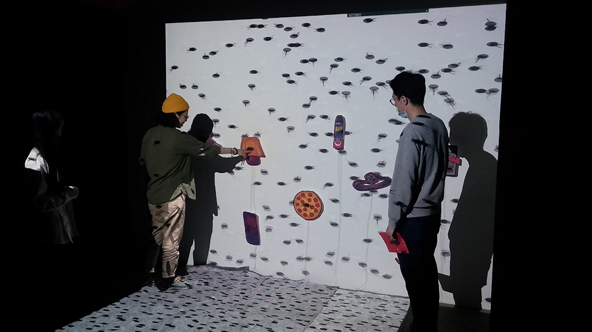

媒體立方柱數位影像內容設計-Pearl Man
以台灣小吃–珍珠奶茶為我們動畫的主角，說明現代人人手一機，使大眾逐漸養成隨手可拍，隨處可打卡標籤的習慣，此動畫以可愛風趣的畫風，我們以Illustrator拉出線稿，用Flash做出生動的珍珠表情，最後以After Effects做整齣動畫的串聯，暗諷現代人愛拍食物，因而使手機掉進珍珠奶茶裡的故事。

三創展覽-蟑嘻嘻
畫面中佈滿了小強，藉此來表達密集恐懼症的感覺，裡頭的物件皆是針對蟑螂的特性下去做設計。為一個裝置藝術，民眾可以直接的與之互動。